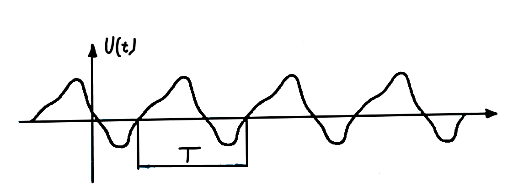

Jaki charakter ma obwód z rys.(którego nie ma lol): indukcyjny, pojemnościowy czy rezystancyjny? Wyznaczyć \(u(t)\). Dane są: \(L\) = 50 mH, \(C\) = 3 mF, \(R = 20 \ \Omega\) oraz \(i(t) = 5\sin(100t) \ A\)
Obwód jest indukcyjny, ponieważ: \[\omega L = 100 * 50 * 10^{-3} = 5 \ [\Omega] > \frac{1}{\omega C} = \frac{1}{10*3*10^{-3}} = 3,33 \ [\Omega]\] Wykorzystując równanie uzyskujemy \[|Z| = \sqrt{20^2 + (5-3,33)^2} = \sqrt{400 + 2,78} = 20,07 \ \Omega\] \[\varphi = \arctan(\frac{5-3,33}{20}) \approx 5^{\circ}\] Znając impedancję i wiedząc, że \(I_m\) = 5 A, możemy wykorzystać wzór(jakiś lol) do określenia napięcia \[u(t) = 5*20,07*\sin(100t + 5^{\circ}) = 100,35*\sin(100t + 5^{\circ}) [V]\]
Łączne oddziaływanie kondesatora i ceewki można opisywać wypadkową reaktancją ich połączenia szeregowego, \(X = X_L - X_C\). Natomiast związek między prądem a wypadkowym napięciem na zaciskach szeregowego połączenia \(RLC\) można zwięźle reprezentować impedancją, którą określają moduł i kąt: \[|Z| = \sqrt{R^2 + X^2}\] \[\varphi = \arctan(\frac{X}{R})\] ale częściej jest przedstawiana jako liczba zepolona.
Zatem impedancja jest wielkością wektorową, która stanowi połączenie rezystancji i reaktancji. o module mierzonym w \(\Omega\).
Impedancję można postrzegać jako abstrakcyjny element sieci, który zastępuje połączenie \(RLC\), tak jak pokazana na rys.(ciekawe jakim). Impedancja pozwala wyrazić wypadkowe napięcie w następujący sposób: \[u(t) = |Z|I_m\sin(\omega t + \theta_i + \arctan(\frac{X}{R}))\] czyli jest ono przebiegiem sinusoidalnym o amplitudzie \(U_m = |Z|I_m\) i kącie fazowym (\(\theta_i + \arctan(\frac{X}{R})\)). Moduł impedancji określa związek między wartościami szczytowymi prądu i napięcia.
W rezultacie \[u(t) = \sqrt{R^2 + (\omega L - \frac{1}{\omega C})^2}I_m\sin(\omega t + \theta_i + \varphi)\] inaczej \[u(t) = \sqrt{{U_{Rm}}^2 + (U_{tm} - U_{Cm})^2}\sin(\omega t + \theta_i + \varphi) = U_m\sin(\omega t + \theta_i + \varphi)\] gdzie \(\varphi = \arctan(\frac{\omega L - \frac{1}{coś}}{R})\) określa przesunięcie faozwe między \(i(t)\) a \(u(t)\).
Jeżeli \(\varphi > 0\), czyli \(u(t)\) wyprzedza \(i(t)\) o \(\varphi\), to obwód ma charakter indukcyjny, gdyż \(\omega L > \frac{1}{\omega C}\), czyli \(X_L > X_C\).
Jeżeli \(\varphi < 0\), czyli \(u(t)\) opóźnia się względem \(i(t)\) o \(\varphi\), to obwód ma charakter pojemnościowy, gdyż \(\omega L < \frac{1}{\omega C}\), czyli \(X_L < X_C\).
Po zbadaniu pojedyńczych elementów rozpatrzymy połączenie szeregowe, a następnie równoległe, opornika o rezystancji \(R\), cewki o indukcyjności \(L\) i kondesatora o pojemności \(C\). W przypadku połączenia szeregowego interesują nas związki między wspólnym prądem a napięciami występującymi na poszczególnych elementach. W Przypadku połączenia równoległego ciekawe są natomiast związki między wspólnym napięciem a natężeniami prądów płynących przez poszczególne elementy.
Załóżmy, że sinusoidalne napięcie \(u(t)\) zostało doprowadzona do szeregowego połączenia \(RLC\), tak jak na rys.(pewnie tym obok) i powoduje, że przez elementy płynie prąd \(i(t) = I_m\sin(\omega t + \theta_i)\). Zgodnie z prawem Ohma występują na nich spadki napięcia: \[u_R(t) = RI_m\sin(\omega t + \theta_i) = U_{Rm}\sin(\omega t + \theta_i)\] \[u_C(t) = -\frac{1}{\omega t}I_m\cos(\omega t + \theta_i) = U_{Cm}\cos(\omega t + \theta_i)\] \[u_L(t) = \omega LI_m\cos(\omega t + \theta_i) = U_{Lm}\cos(\omega t + \theta_i)\] których suma na mocy praca Kirchhoffa, jest równa napięciu wypadkowemu: \[u(t) = u_R(t) + u_L(t) + u_C(t)\] czyli \[u(t) =RI_m\sin(\omega t + \theta_i) + (\omega L - \frac{1}{\omega C})I_m\cos(\omega t + \theta_i)\] albo \[u(t) = U_{Rm}\sin(\omega t + \theta_i) + (U_{Lm} - U_{Cm})\cos(\omega t + \theta_i)\]
Jeżeli źródła napięcia sinusoidalnego zostaną uzyte do zasilania liniowej sieci, to w jej gałęziach popłyną pady sinusoidalnie zmienne o tej samej częstotliwości \(f = \frac{\omega}{2\pi}\), niezaleznie od struktury obwodu ani parametrów elementów biernych, które wchodzą w jego skład. Typy i paramnetry elementów oraz sposób ich połączenia decydują tylko o wartościach szczytowych i przesunięciach fazowych prądów i napięć w danym układzie.
Załóżmy, że w pewnej gałżeci płynie prad, którego wartości chwilowe opisuje ogólny wzór: \[i(t) = I_m\sin(\omega t + \theta_i)\]
Przepływjąc przez element liniowy, taki prąd powoduje wystąpienie na nim spadku napięcia, który ma sinusoidalny przebieg: \[u(t) = U_m\sin(\omega t + \theta_u)\] o amplitudzie i przesunięciu fazowym, które zależą od rodzaju elementu oraz jego parametrów. Tylko w rezystorze takie samo przesunięcie fazowe charakteryzuje prąd i napięcie. W kondensatorach i cewkach przebieg prądu jest przesunięty w fazie względem przebiegu napięcia.
Przebiegi okresowe, których nie można opisać wzorem jakimś kurwa są nazywane niesinusodalnymi. Na podstawie teorii szeregów Fouriera każdy przbieg niesinusodalny można przedstawić w postaci złożenia przbiegów sinusoidalnych.
Bardzo często używa się terminu pulsacja. Jest to częstotliwość pomnożona przez kąt pełny \[\omega = 2\pi f = \frac{2\pi}{T}\]
Jednostką pulsacji jest \(\frac{rad}{s}\).
Zapis funkcji sinusoidalnej wtedy bardziej zwięzły: \[i(t) = I_m\sin(\omega t + \alpha)\]
Inne nazwy: prędkość kątowa, częstość kołowa
Odwrotność okresu nazywamy częstotliwością \[f = \frac{1}{T}\]
Jednostką pulsacji jest Hz (herc.) \(\frac{1}{s}\).
Liczbowo częstotliwość jest równa ilości okresów w jednej sekundzie.
Na przykład, 50 Hz oznacza, że wszystkie wartości funkcji powtarzają sie kolejno 50 razy w ciągu sekundy
Najogólniejszy prąd sinusoidalny ma postać: \[i(t)=I_m\sin(2\pi \frac{1}{T} + \alpha)\]
gdzie:
\(i\) - wartość chwilowa
\(I_m\) - wartość maksymalna (amplituda)
\(T\) - okres
\(\alpha\) - kąt fazowy
Wartości \(i(t)\) zmieniają się w czasie sinusoidalnie.
Wartości \(i(t)\) powtarzają się po upływie okresu \(T\).
Przebieg lub sygnał \(u(t)\), który stanowi funkcję czasu, jest nazywany okresowym albo periodycznym, jeżeli przyjmuje on wartości, które powtarzają się cyklicznie: \[u(t + nT) = u(t)\] gdzie \(n\) jest dowolną liczbą całkowitą \(\pm \ 1, \pm \ 2, \pm \ 3, \dots\), zaś \(T\) oznacza okres przebiegu, czyli najkrótszy czas, po którym następuje powtórzenie.
Odwrotność okresu \[f = \frac{1}{T}\] jest nazywana częstotliwością przebiegu. Jeżeli \(T\) jest określane w sekundach, to odpowiada mu \(f\) w hercach [Hz].
Podstawowe parametry:
Impulsy o polaryzacji dodatniej: (1), (2)
Impulsy o polaryzacji ujemnej: (3), (4)
Impulsy dodatnie: (1)(4)
Impulsy ujemne: (2)(3)
\[u(t)=A\sin(\omega t + \varphi)\] lub \[u(t) = A\cos(\omega t + \varphi^{'})\] gdzie \(\varphi^{'} =
\varphi - \frac{\pi}{2}\)
\(A\) - amplituda
\(\omega t + \varphi\) - faza
\(\omega\) - częstość (cześstość kołowa) \(\varphi\) - faza początkowa (przesunięcie fazowe)
Częstotliwość: \(f = \frac{\omega}{2\pi}\)
Okres: \(T = \frac{1}{f} = \frac{2\pi}{\omega}\)
Zapis w postaci eksponencjalnej z wykorzystaniem liczb zespolonych: \[\cos|\omega t + \varphi| = \frac{1}{2}|e^{coś} + e^{coś}|\] \[cos|\omega t + \varphi| = R|e^{coś}|\] \(j\) - jednostką urojona
Sygnałem okresowym jest sygnał powtarzający się w równych odstępach czasu nazywanych okresem sygnału \[U(t+T) = U(t)\]

Okres sygnału: \(T\)
Częstotliwość: \(f = \frac{1}{T}\) - jednostka Herc [Hz] = \(\frac{1}{s}\)
Sygnał skwantowany
(dyskretny w wartościach
ciągły w czasie)
Sygnał cyfrowy
(dyskretny w wartościach i w czasie)
Sygnał analogowy
(ciągły w wartościach i w czasie)
Sygnał spróbkowany
(ciągły w wartościach,
dyskretny w czasie)
Sygnał definiowany jest jako funkcja czasu (i przestrzenna) dowolnej wielkości o charakterze energetycznym, w którym można wyróżnić dwa elementy: noścnik i parametr informacyjny
W zależności od rodzaju nośnika wyróżnia się sygnały elektryczne, magnetyczne, elektromagnetyczne (w tym świetlne), akustyczne, mechaniczne, cieplne.
Parametrm informacyjnym może być np. amplituda, częstotliwość, faza, szerokość impulsu
W układach skupionych czyli takich, których rozmiary są znacznie mniejsze niż długość fali, sygnały moga być traktowane jako funckje jedynie czasu: \[\underline{U(t),I(t)}\]